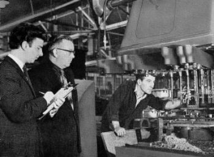

Fábrica século XX
Filme Tempos Modernos

Fábrica dias atuais
Frederick Winslow Taylor
Administração Científica, também conhecida como Taylorismo, é a teoria gerencial que analisa e sintetiza os movimentos e tempos gastos em cada tarefa, melhorando a produtividade do trabalho.
Os princípios da administração científica foram desenvolvidos por Frederick Winslow Taylor e publicados no livro “Os Princípios da Administração Científica” (1911).
• Desenvolve método padronizado para a realização de cada tarefa;
• Seleciona trabalhadores com habilidades apropriadas para cada tarefa;
• Treina os trabalhadores em métodos padronizados previamente desenvolvidos;
• Planeja as tarefas dos trabalhadores de forma a eliminar interrupções;
• Estipula incentivos para os trabalhadores para aumentar os resultados.
• Abordagem científica para administração e melhoramento de processos de produção;
• Importância da compensação pela performance;
• Iniciou estudo criterioso de tarefas;
• Importância dos critérios de seleção;
• O trabalho é definido e autoridade/responsabilidade é legitimada;
• Hierarquia e autoridade dos níveis superiores;
• Seleção baseada em competência; treinamento ou experiência;
• Ações e decisões são registradas para permitir continuidade e memória;
• O gerenciamento é diferenciado da propriedade da organização;
• Gerentes seguem regras/procedimentos que garantem comportamento;
• Confiável e previsível;
Fábrica século XX
Filme Tempos Modernos
Fábrica dias atuais
Henry Fayol
A administração clássica foi desenvolvida pelo Engenheiro de minas e administrador francês Henry Fayol. Foi um dos primeiros estudiosos a analisar a natureza da atividade empresarial e a formular uma teoria completa de gestão.
Juntamente com Taylor e Ford, são considerados os pioneiros da Administra-ção. Sua visão, da organização, foi a de um gerente ou diretor. Enquanto Taylor via os processos administrativos da base para o topo, a análise de Fayol era inversa, de cima para baixo.
Os conceitos de Administração Clássica e Administração Científica são complementares, este é o motivo do estudo das duas teorias em conjunto.
• Controlar
• Comandar (Liderar)
• Organizar
• Planejar (Prever))
• Coordenar
• Conheça a fundo o seu quadro de funcionários;
• Elimine os incapazes;
• Conheça bem as regras para unir a organização e seus membros;
• De o bom exemplo (por sua atitude);
• Conduza inspeções regulares
• Reúna seus principais parceiros em reuniões (conferências);
• Não fique restrito aos detalhes;
• Faça prevalecer entre seu pessoal energia, iniciativa e devoção.
Divisão do trabalho – favorece a eficiência na produção aumentando a eficiência.
Autoridade e responsabilidade – direito de dar ordens que serão prontamente obedecidas.
Unidade de comando – o empregado deve obedecer a ordens de apenas um superior, evitando contraordens.
Unidade de direção – o controle único através de grupos de atividades com os mesmos objetivos.
Disciplina – estabelecer normas de conduta para todos. A ausência de disciplina leva a organização ao caos.
Prevalência dos interesses gerais – os interesses gerais da organização devem prevalecer sobre os interesses individuais.
Remuneração – deve ser suficiente para garantir a satisfação dos funcionários e da organização.
Centralização – as atividades cruciais da organização e a autoridade para sua adoção devem ser centralizadas.
Hierarquia – defesa incondicional da estrutura hierárquica, respeitando uma linha de autoridade fixa.
Ordem – deve existir em toda organização- cada pessoa em seu devido lugar.
Equidade – tratamento justo, buscando a lealdade e a devoção dos funcionários.
Estabilidade dos funcionários – alta rotatividade pode prejudicar o desempenho da or-ganização e o moral dos funcionários.
Iniciativa – capacidade de estabelecer um plano e cumpri-lo.
Espírito de corpo – o trabalho deve ser conjunto, facilitado pela comunicação entre as equipes.
Enquanto a ênfase de Taylor estava nas tarefas, Fayol partia da visão macros-cópica da organização, focando as funções de gerenciamento e a estrutura organizaci-onal. Fayol não considera características e comportamento psicológico dos indiví-duos.
Obsessão pelo comando – unidade de comando, autoridade, departamentalização com o objetivo de melhorar o controle.
Empresa como sistema fechado – o ambiente empresarial não fazia parte das discussões sobre os efeitos da teoria.
Pioneiro ao considerar a administração uma função distinta das outras funções, como finanças, produção e distribuição, e o trabalho do gerente distinto das operações técnicas das empresas;
Contribuiu para que se tornasse mais nítido o papel dos executivos;
Assim como Taylor, mecanicista, vê o trabalhador como uma peça no processo de produção e submetido a uma supervisão policialesca;
Não corresponde à verdade o conceito genérico de que o trabalhador não tem outros interesses e motivações senão os representados pela recompensa financeira;
Ausência de trabalhos experimentais que comprovassem a teoria.
Obrigado por ter lido até aqui professor, espero que tenha gostado. O trabalhou serviu de grande valia em meu aprendizado, esses dois cidadãos citados são o alicerce dos processos administrativos de hoje.
Deixei um link abaixo com o trabalho em PDF, só baixar
https://administradores.com.br/artigos/teoria-classica-da-administracao-segundo-henri-fayol
https://blog.egestor.com.br/taylor-e-fayol
http://www.scielo.br/scielo.php?script=sci_arttext&pid=S0034-75901971000100003